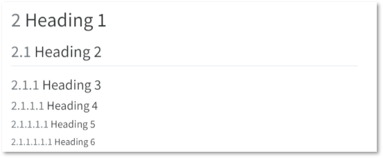
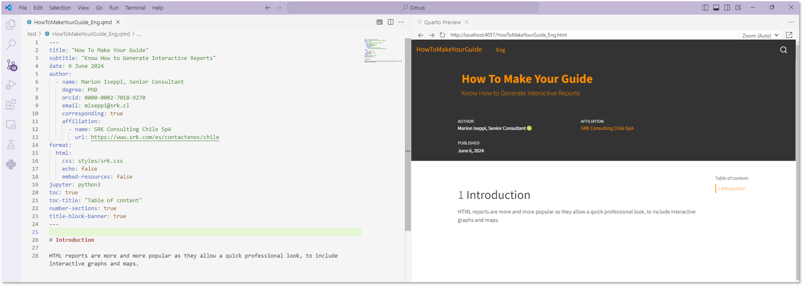
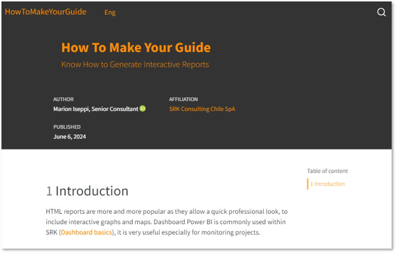

![]()
1 Introduction
HTML reports are more and more popular as they allow a quick professional look, to include interactive graphs and maps. Dashboard Power BI is commonly used within SRK (Dashboard basics), it is very useful especially for monitoring projects.
But HTML reports have several advantages:
- accessible from any machine (computer, tablets, phone)
- update it as you go, so you are sure the client is always using the last version
- you can easily include an option to download your report as a pdf, word or powerpoint document as clients usually use our figures for their own internal reports
2 Set up your environment
2.1 Install Quarto
Quarto is an open-source scientific and technical publishing system designed to create high-quality documents, reports, presentations, and websites. It integrates seamlessly with tools and languages such as R, Python, and Jupyter, enabling authors to combine text, code, and visualizations in a single document.
- Install Quarto on your machine. Go to here. You will have to restart your machine.
Note
Extensive documentation is available online.
2.2 Install extensions
In order to use Quarto with VS Code, we will need to install the extension.
- Go to the side bar in VS Code and
ExtensionorCTRL+X. - Search for Quarto and install the extension.
3 Set up your website
3.1 Set up your main page
- Go to the Explorer window, right click and select
New Folder
Your folder name will be the name of your repository in GitHub (see StartCodingToday Course). In this case, I will name it HowToMakeYourGuide.
To start creating your webpage, create a new file .qmd. Right click on your newly created folder and select
New file. Here I will call it HowToMakeYourGuide_Eng.qmd.
- Then we will need to create and initialize a .yml file which will contain the website information: the title, the navigation bar panels, and the webpages (.qmd files) that we will set up next. Create a new file and name it **_quarto.yml**
- Write the following in the **_quarto.yml** file
project:
type: website
output-dir: docs
website:
title: "How To Make Your Guide"
navbar:
left:
- href: HowToMakeYourGuide_Eng.qmd
text: Eng
format:
html:
theme: cosmo
toc: true
Important
output-dir: docs lines mean that the files that Quarto will generate for our website will be saved in a folder called docs. Make sure this line is present in your .yml file as it will be key for publishing your site on GitHub Pages.
- Open your .qmd file HowToMakeYourGuide.qmd. And use the keyboard shortcut
CTRL+SHIFT+K. This shortcut should have been installed along with the Quarto extension and a side window will open with a preview of your website. This will facilitate the build.
Note
The .yml file can be updated at any time. If you want to add a page, change your title, formatting, etc. We will manage it throughout the website creation.
3.2 Add another page
If you want to create another page that will be available in the navigation bar at the top of your website.
Create a New file and name it according to the content of your second page. In this case: HowToMakeYourGuide_Span.qmd
You will then need to link it in your .yml file.
project:
type: website
output-dir: docs
website:
title: "How To Make Your Guide"
navbar:
left:
- href: HowToMakeYourGuide_Eng.qmd
text: Eng
- href: HowToMakeYourGuide_Span.qmd
text: Span
format:
html:
theme: cosmo
toc: trueCTRL+SHIFT+K. You can now see your two pages at the top.
4 Build your webpage
4.1 Header section
We can now build our web page.
- In the .qmd file, we will first specify the title and author.
---
title: "How To Make Your Guide"
author:
- name: Marion Iseppi, Senior Consultant
---
Note
The header section in the .qmd file is separated by —. Make sure they are present and that the indents are respected.
CTRL+SHIFT+Kshould update your preview
- You can add as many details as you need: subtitle, date, specify more about the author such as degree, affiliation, etc.
---
title: "How To Make Your Guide"
subtitle: "Know How to Generate Interactive Reports"
date: 6 June 2024
author:
- name: Marion Iseppi, Senior Consultant
degree: PhD
orcid: 0000-0002-7018-9270
email: miseppi@srk.cl
corresponding: true
affiliation:
- name: SRK Consulting Chile SpA
url: https://www.srk.com/es/contactenos/chile
---4.2 Styling
Then let’s specify the format. Quarto has a standardized format that can be customized with a .css file. An SRK format is available here.
Create a folder Styles in your repository folder and save the srk.css file.
You can update your header section using the following keywords.
---
title: "How To Make Your Guide"
date: 6 June 2024
author:
- name: Marion Iseppi, Senior Consultant
degree: PhD
orcid: 0000-0002-7018-9270
email: miseppi@srk.cl
corresponding: true
affiliation:
- name: SRK Consulting Chile SpA
url: https://www.srk.com/es/contactenos/chile
format:
html:
css: styles/srk.css
echo: false
embed-resources: false
jupyter: python3
toc: true
toc-title: "Table of content"
number-sections: true
title-block-banner: true
---CTRL+SHIFT+K
Tip
Instead of linking your .css file to each pages, you can also link it to your .ylm file as follow:
project:
type: website
website:
title: "How To Make Your Guide"
navbar:
left:
- href: HowToMakeYourGuide_Eng.qmd
text: Eng
format:
html:
theme: cosmo
toc: true
css: styles/srk.css4.3 Authoring
4.3.1 Headings and lists
Six levels of headings are available in Quarto.
# Heading 1
## Heading 2
### Heading 3
#### Heading 4
##### Heading 5
###### Heading 6It renders as follows:

- In your .qmd file, below your heading section, enter your section name. For example:
# Introduction
HTML reports are more and more popular as they allow a quick porfessional look, to include interactive graphs and maps. - CTRL+SHIFT+K.

Tip
In the heading section:
number-sections: true numbers automatically all headers. If you wish to remove those, change to false.
toc: true refers to the table of contents. If you want to remove it, change to false.
- For lists, you have several options:
- unordered list
- subitem 1
- subitem 2
- item 2
1. ordered list
2. item 2It renders as:

4.3.2 Text formatting
You can easily format your text using the following:
*italics*
**bold**
***bold italics***
superscript ^2^ / subscript ~2~
~~strikethrough~~
`verbatim code`These will display as follows:
4.3.3 Notes
You can add notes throughout your site for better comprehension by using callout.
- Write callout in your file. With the Quarto extension, it will propose a list of possibilities. Try and select callout-note.
- Write your note inside the :::
::: {.callout-note}
Extensive documentation is available [online](https://quarto.org/docs/guide/).
:::- Hit
CTRL+SHIFT+K.
4.3.4 Links and images
The same syntax can be used for hyperlinks, links, images, or even short video clips.
Important
We will then use GitHub Pages to publish our website. GitHub does not allow files exceeding 100Mb. Make sure that all files related to your website, including downloadable files, are below the limitation.
- For hyperlinks, use the following syntax. It can be used within the text and will act as a hyperlink to the website in question.
Dashboard Power BI is commonly used within SRK ([Dashboard basics](https://learn.microsoft.com/en-us/power-bi/create-reports/service-dashboards)), it is very useful especially for monitoring projects.Will be displayed as:

Create a folder in your repository called media. This is where you will save all images you want to display on your website.
For local images, use the same syntax. You can also choose to leave the caption empty. You can also specify the dimensions of the image using {}.
In this case, it will be displayed as:
- Use the same syntax to display a video. You can also add specifications such as muted, loop, dimensions with {}.
{loop=true muted=true autoplay=true}4.3.5 Tables
The syntax for tables is as follows:
|Column 1|Column 2|
|-|-|
|R1C1|R1C2|
|R2C1|R2C2|It will display as follows:
You can also specify the dimensions of your table by adding:
|Column 1|Column 2|
|-|-|
|R1C1|R1C2|
|R2C1|R2C2|
: {tbl-colwidths="[25,60]"}That displays as:
Tip
As the building of a table in Quarto can be time-consuming, if you already have a table in Word or Excel you can copy and paste it in srkCHAT and ask it to transform it into a markdown format.
4.3.6 Include Python cells
In your reports, you might want to display interactive features. You can include them directly in your .qmd file. Enter your script as follows and specify the language, in this case, Python.
It will render as follows:
4.3.7 Display fenced code block
You might want to include cells block without running them. In this case, add a . before python.
And it will render as follows:
import plotly.graph_objects as go
import numpy as np
# Generate sample data
np.random.seed(42)
data = np.random.randn(500)
# Create a histogram
fig = go.Figure()
# Add trace for the histogram
fig.add_trace(go.Histogram(
x=data,
name='Sample Data',
marker=dict(color='hotpink', line=dict(width=0.5))
))
# Customize layout
fig.update_layout(
title='Histogram using Plotly',
xaxis_title='Value',
yaxis_title='Frequency',
template='plotly_white'
)
# Show the chart
fig.show()4.4 Visual Studio Mode
4.4.1 Editing mode
Visual Studio Mode allows to have access to all authoring styles.
Once in Visual Mode, the top bar allows you to have access to all the formatting and to have a direct preview of your report, including the table of content for an easier navigation.
To include an image or a link, go to the top bar and click on the picture icone, enter the relative path to your image. You can also add attributes that can be used to call on the picture in your text using @ or Insert>Cross Reference.
4.4.2 Bibliographic references
You can link Zotero directly to your interactive report.
Zotero is a free software that allows to collect, organize, annotate and cite research.
With the google addin tool, you can save research directly to your Zotero and then call them in your report.
Go to Insert>Citation…
As you cite papers in your text, it will automatically update a reference table at the end of your document:
5 Add your repository to GitHub
- Open GitHub Desktop and go to File > New Repository. Enter the local path to your repository:
- Uncheck Keep this code private and click on Publish repository in GitHub Desktop main window.
Note
In order to use GitHub Pages to publish your website, your code will have to be public. If you want to restrict access to your website, you can use a paid version of GitHub Enterprise.
- If you go to the History tab, you can change what has been published. You should see all your repository.
- Now go to your account on GitHub, click on your user profile image, repository:
6 Publish to GitHub
6.1 Prepare your project for GitHub
Now that you created your pages and that your repository has been published on GitHub, we will deploy your website using GitHub Pages.
- In your terminal enter:
quarto renderYou can see it has created a docs folder at the root of your repository.
Note
If you are still visualizing the preview of your website using CTRL+SHIFT+K, you will notice that your terminal is busy. In order to kill the command, click on your terminal and use CTRL+C.
- Go to the
SOURCE CONTROLtab on the left sidebar of VS Code. You’ll see there are several changes stashed. You will commit them to GitHub.
- Click on the + sign Stage All Changes and COMMIT. A window COMMIT_EDITMSG will open. On the first line, enter a short description of changes. Then save and close the window.

- Then click on Sync Changes. A window will warn you that VS Code is going to push the changes to GitHub, click OK.
6.2 GitHub Pages
- Go to your online repository and click on your newly published one. Then on the top bar go to Settings.
- In Settings, click on Pages that is located on the left navigation bar.
- In Pages, specify the branch to main and the folder to /docs. Then click
Save. You should see a blue banner appear GitHub Pages saved.
- Update your page, you should now see a link to your website built as follows: https://your-username.github.io/your-repository-name. Go to your website.
It is done!